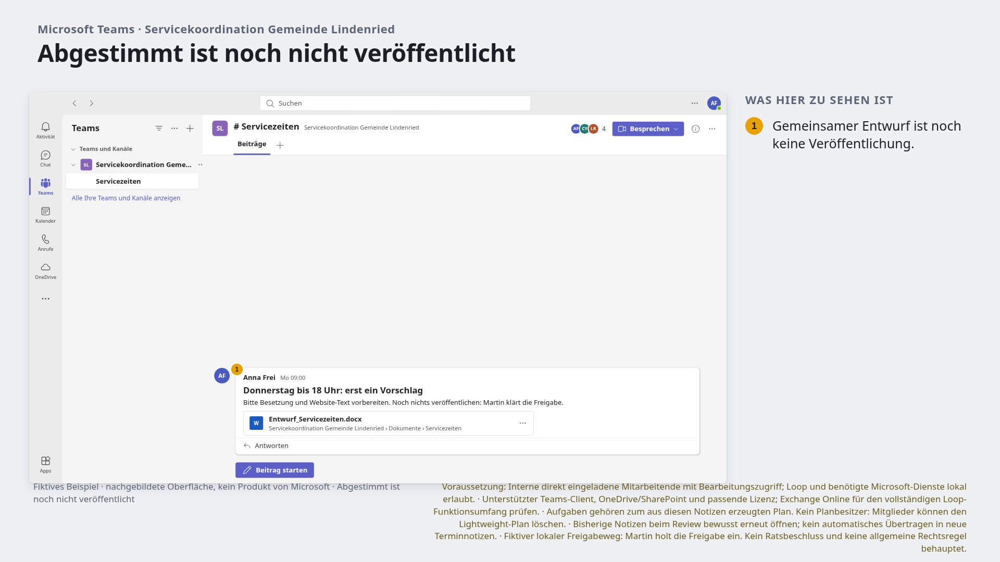
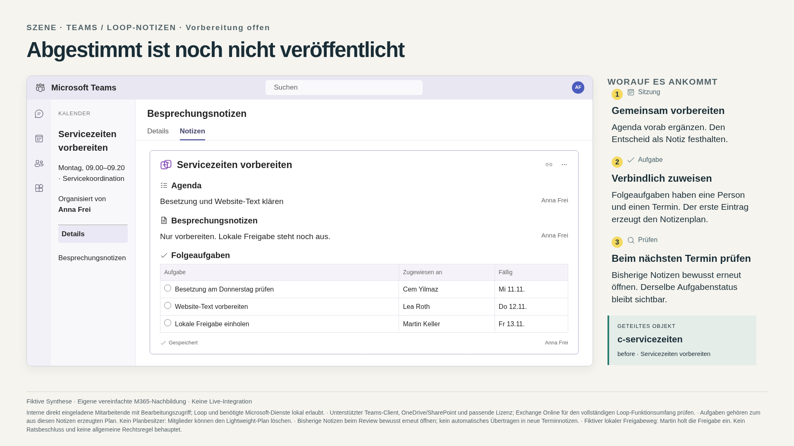
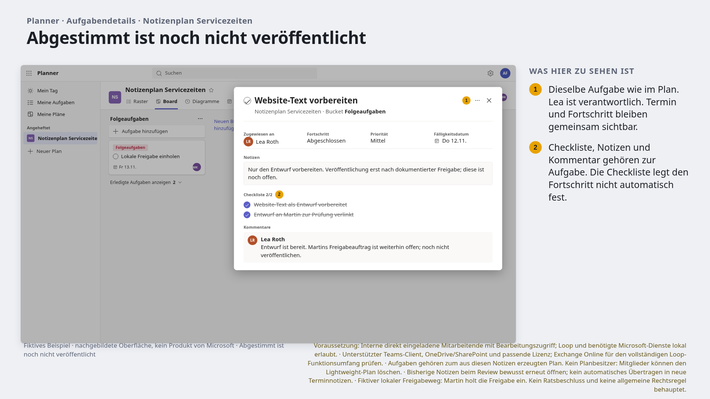
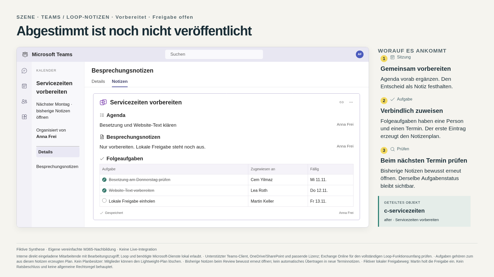
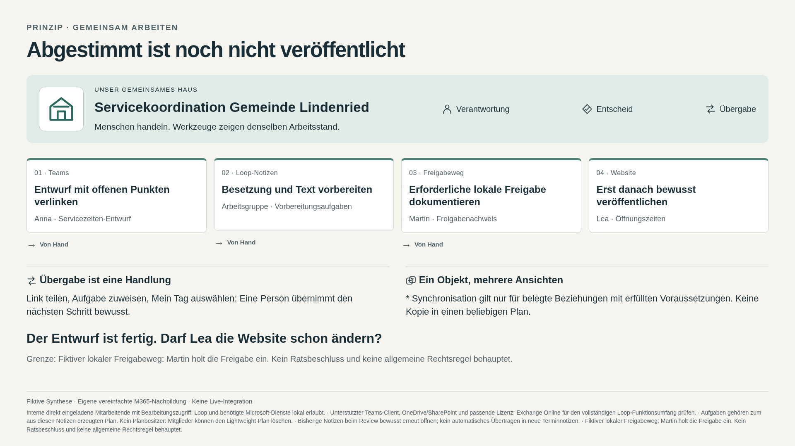

Servicekoordination Gemeinde Lindenried · FÜNF FOLIEN
Abgestimmt ist noch nicht veröffentlicht
Vorbereitung ist erledigt; Freigabe und Publikation bleiben sichtbar offen.
Projekt-JSON · Abfolge öffnen, anpassen und exportieren

1. Anna verlinkt den Entwurf. Persönliche Sprechernotizen und Einwohnerfälle gehören nicht hierher. Alternative: Dokument mit Pendenzenliste. · Original-PNG
2. Erste Folgeaufgabe erzeugt den zugehörigen Lightweight-Plan. Keinen beliebigen bestehenden Plan und keinen Planbesitzer behaupten. In Planner öffnen ist manuell. · Original-PNG
3. Lea hat dieselbe Textaufgabe erledigt. Der Kommentar nennt ausdrücklich die offene Freigabe. Die erledigte Aufgabe ist keine Publikationsfreigabe. · Original-PNG
4. Dieselbe Komponente und dieselben Aufgaben erneut öffnen. t-1 und t-2 sind erledigt; t-3 bleibt offen. Keine automatische Übertragung in neue Terminnotizen. · Original-PNG
5. Der Entwurf ist fertig. Darf Lea die Website schon ändern? Einfachere Alternative: Gemeinsames Dokument mit einer einfachen Pendenzenliste, wenn das genügt. Fachsystem- und Publikationsschritte sind manuell und werden hier nur erklärt. · Original-PNGLehrfrage: Der Entwurf ist fertig. Darf Lea die Website schon ändern?
Einfacher geht es auch: Gemeinsames Dokument mit einer einfachen Pendenzenliste, wenn das genügt.